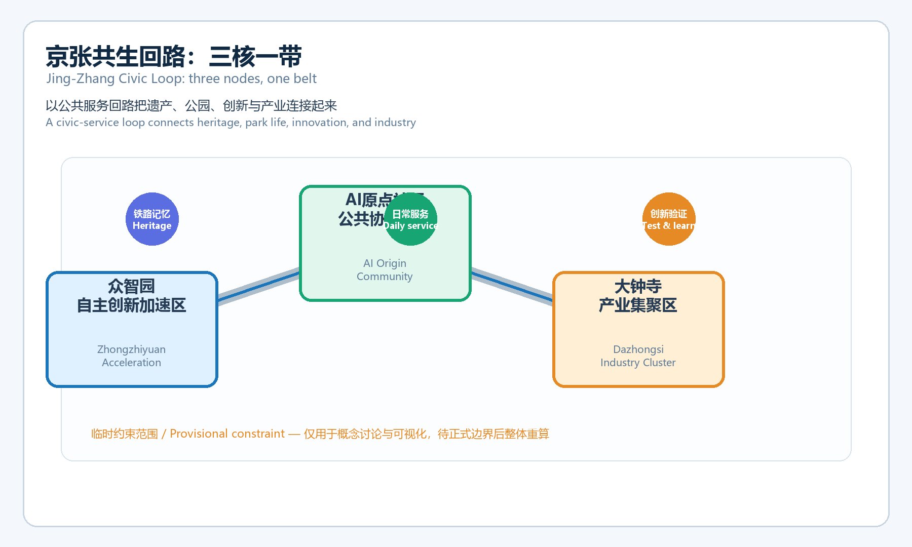
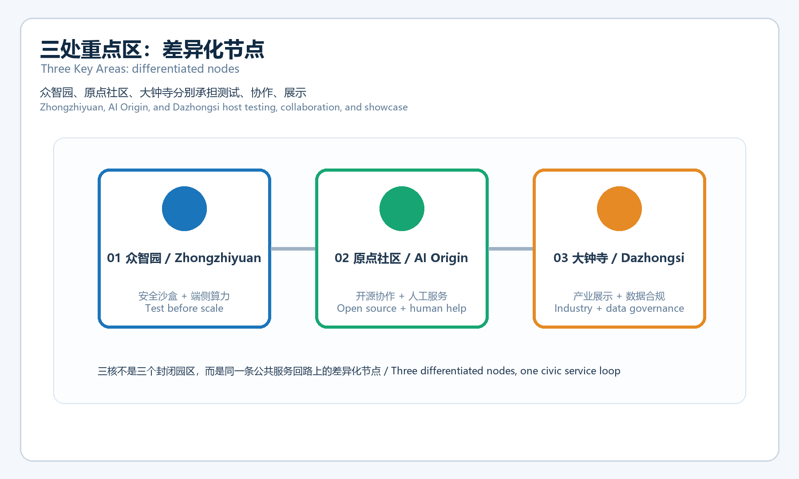
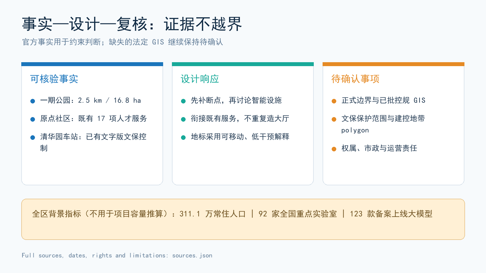

京张共生回路：面向日常公共服务的AI创新带
把百年铁路的自主建造精神转译为可进入、可退出、可复核的AI公共服务回路。
京张共生回路：面向日常公共服务的AI创新带
0. 一句话判断
本方案不把 AI 当成城市的装饰性“智能层”，而把它组织成一条可被普通人使用的公共服务回路：先保证连续通行、人工说明、无账户替代、退出和申诉，再叠加可解释的 AI 辅助。京张遗址公园是公共脊，众智园、北京 AI 原点社区、大钟寺 AI 产业集聚区是三个差异化节点；三核之间由蓝绿慢行和公共服务换乘串联。来源 来源 深度
这是概念建议与参考方案，不是法定规划、政府审定、建设许可、招商承诺、采购方案或运营授权。公开资料没有提供正式 SITE_BOUNDARY 与 KEY_AREA 多边形，本包使用临时约束范围；正式数据到位后，所有几何、指标、图纸和网页必须整体重算。空间数据 空间数据 指标

1. 设计依据与资料清单
本节把“事实、设计建议、待专业确认”分开。设计意图是让审阅者能够从公告与任务书进入空间方案，再从空间方案回到 GeoJSON、指标、来源和假设；临时边界不被包装成官方红线，缺失的权属、道路、市政、文保与运营资料不被补写成确定事实。空间影响由 site_boundary.geojson、key_areas.geojson 与设计图层表达，指标影响由 metrics.json 重算，数据缺口由 assumptions.json 追踪；正式资料到位后必须整体替换并复核。来源 空间数据 指标
方案依据项目公告、智能体任务书、公开来源登记、站点资料包、临时边界和专业标准快照编制。正式可用的事实只来自已登记的公开或清权材料；临时几何只用于方案生成、空间讨论和自检，不用于法定红线、精确面积或控规结论。来源 来源 标准
1.1 新增官方事实与设计响应
本轮新增资料不是“背景堆叠”，而是形成六条可追溯的设计约束：
| 类型 | 可核验事实 | 本方案据此作出的判断 | 明确不作的推断 |
|---|---|---|---|
| 区级统计 | 2025 年末海淀区常住人口 311.1 万人；全国重点实验室 92 家；备案上线大模型 123 款，公报注明 2025 年数据为初步数。来源 | 公共服务节点应同时服务居民、研究者、创业团队和流动人才，并以通用、可解释、可人工办理为默认。 | 不把全区总量按比例分摊到临时边界，不据此预测客流、建筑规模或项目收益。指标 |
| 已建公园 | 京张铁路遗址公园一期位于清华东路至知春路，官方报道长度 2.5 公里、面积 16.8 公顷，并以遗迹保护、功能织补、东西缝合和公共服务为目标。来源 | “公共脊”不是新造一条科技景观轴，而是接入并补强既有公共空间，优先找断点、入口、休息和人工服务缺口。 | 不把一期面积与临时方案面积合并，不把未建区段写成已开放。指标 |
| 控规程序 | 2024 年 12 月至 2025 年 1 月曾公示沿线街区控规草案；采信通告显示北三环—四道口路等立交表达被调整或仍需下一阶段深化。来源 | 环路和主干路交叉点只做“连通性问题清单”和多方案接口，不画成已经批准的桥隧或道路红线。 | 不把公示采信通告当作已批控规，不从网页文字反推法定边界。[assumption:A-CONTROL-PLAN-006] |
| 既有服务 | AI 原点社区已落地人才服务流动站，官方披露 5 类 17 项高频事项、智能问答与市区镇三级人工帮办。来源 | 原点社区的设计从“再造一个服务大厅”改为扩展既有服务：补充无账户入口、安静等候、纸质说明、转介与服务失败复盘。 | 不重复宣称 17 项服务为本方案成果，不假设其容量、开放时间或系统接口。指标 |
| 文物保护 | 北京市文物局公布了清华园车站旧址保护范围及Ⅰ类、Ⅴ类建设控制地带，部分地带禁止新建或仅允许与保护展示相关的建设。来源 | “第一条路”地标改为可移动、低干预的解释路线；正式文保 GIS 到位前不确定站房附近的新建落位。 | 不把网页中的文字距离自行数字化为官方 polygon，不提出开挖、固定设备或构筑物。[assumption:A-HERITAGE-005] |
| 慢行绿道 | 北京市慢行行动强调连续路权、无障碍、林荫和水—路—绿融合；绿道指南服务于已批绿道专项规划的实施。来源 来源 | 首期审计对象从“布置智能设施”调整为断点、过街、遮阴、盲道冲突、停留点和非 AI 导视六项。 | 不把市级年度任务或指南写成本站点获批工程，不替代道路、园林和无障碍专业设计。 |
结构化证据中，事实写入 sources.json 和 metrics.json；设计判断留在正文和矩阵；文保 GIS、法定控规、权属及实施责任等待确认项写入 assumptions.json。网页未显示明确开放复用许可时，本包只作短句转述与链接引用，不复制图片、地图、logo 或界面素材。[assumption:A-RIGHTS-008]
三层范围工作框架
三层范围不是三张互不相干的图，而是从产业网络到城市空间、再到重点片区的同一条证据链：统筹研究范围提出创新生态与文化叙事，总体设计范围把判断落到公共脊、蓝绿系统、交通和更新项目，重点区域用三核差异化设计验证服务接口。临时范围只支持概念比选，不支持法定面积、红线或实施结论；正式边界变化时，三层范围、用地分区、指标和图纸必须联动复算。来源 深度 空间数据
三层范围采用同一套“公共服务回路”方法：
| 层级 | 公开资料中的尺度 | 本方案的空间判断 | 需要补齐的证据 |
|---|---|---|---|
| 统筹研究范围 | 约 43.6 km² | 用高校、企业、算力、人才、文化和公共服务建立创新网络 | 正式研究边界、现状产业与交通底数 |
| 总体设计范围 | 约 11.4 km² | 以京张遗址公园为公共脊，组织城市更新、产业服务、蓝绿慢行和新型基础设施 | 正式规划边界、权属、市政和道路资料 |
| 重点区域 | 约 368.4 ha，三处重点区 | 三核分别承担安全测试、开放协作、产业展示 | 三处正式 polygon、文保与控规条件 |

2. 总体概念、命名体系与视觉识别
主名称为“京张共生回路”，英文为 “Jing-Zhang Civic Loop”。“京张”保留铁路、工程和跨区域连接的记忆；“共生”强调人、社区、企业、专业团队与智能体共同校正；“回路”强调服务必须有入口、替代路径、人工接力、停止和反馈，而不是单向推送。
建议形成三层命名：
- 品牌层：京张共生回路 / Jing-Zhang Civic Loop；
- 空间层：一条京张公共脊、三核、两翼、多点场景；
- 服务层：开源发布厅、可信测试沙盒、公共服务换乘、数据治理展厅、AI 慢行导览等概念节点。
Logo 方向是“一条可回到原点的折线 + 三个开放节点”：折线引用铁路线路和回路，三个节点以不同颜色区分测试、协作、展示；不使用第三方字体、企业标识、人物肖像或未经授权的铁路图像。视觉基调采用深蓝、青绿、暖橙和纸白，表达工程理性、公共性和历史连续性。来源
三大定位是“百年京张文化带、都市 AI 生活体验带、AI 融合创新带”；五大功能是“AI 全栈自主创新体系、世界级 AI 创新生态、AI+ 场景赋能新范式、智能化 AI 活力城市、AI 治理全球话语权”。三区两翼协同为：北京 AI 原点社区负责开放协作，众智园负责自主创新与治理测试，大钟寺负责产业展示与服务接口；中关村科技服务翼提供高校、资本、知识产权、专业服务的连接，小月河场景赋能翼把实验转成日常公共体验。深度 空间数据
3. 统筹研究范围产业与未来城市研究
生态不按企业名单或投资额做未经核实的排名，而按“能力要素—空间载体—公共回报”组织：高校与研究、开源协作、算力与数据、产品和产业服务、人才生活、公共场景、国际传播。可参考的全球生态类型包括研究型园区、开发者社区、产业测试区、城市服务实验室、数字公共基础设施、创客与教育网络；本方案不把案例中的制度、企业或资金直接移植为海淀事实。来源 标准
3.1 五个全球案例的“可借鉴/不可移植”矩阵
| 官方案例 | 可借鉴的方法 | 对本方案的落点 | 不可直接移植 |
|---|---|---|---|
| 新加坡 Punggol Digital District | 高校、产业、社区和开放数字平台共同构成测试环境。来源 | 众智园只在授权、隔离和可停机条件下提供测试；数据接口先列用途、权限和退出。 | 传感器规模、平台治理、投资和运营体系。 |
| Barcelona 22@ | 在存量城市中把创新、创意、照护、公共设施与日常经济并置。来源 | 大钟寺首层界面不能只有企业展厅，要并置社区可进入的服务与公共空间。 | 巴塞罗那规划工具、土地经济、项目品牌与产业配额。 |
| Amsterdam Nieuwe Meer | 公共交通、居住、工作、服务、知识机构与数字基础设施形成混合创新区。来源 | 三核之间用公共交通和慢行连接，并把生活服务作为创新生态的基本设施。 | 50/40/10 等当地功能比例及建筑控制。 |
| Cambridge Kendall Square / Volpe | 通过公众参与把科研创新、住房、社区中心、步行联系与开放空间共同规划。来源 | 把公共空间和社区收益写进每个测试项目的进入条件，而非技术上线后的附加项。 | 已批规模、地产安排、资金和社区收益协议。 |
| Paris-Saclay Gif-sur-Yvette | 高校科研与住房、邻里服务、公园、公共空间和区域能源系统共同组织。来源 | 以“研究—生活—公共空间—基础设施”四项齐备检查重点区，而非只看企业密度。 | 法国法定程序、轨道时序和公共开发机构模式。 |
五案共同支持三条方法：创新空间必须可被日常生活使用；测试必须有明确治理与退出；公共空间、交通和社区服务应与研发设施同步设计。它们只构成比较研究，不证明海淀已经具备相同制度、预算、数据或交付能力。
总体结构是“1 条公共脊 + 3 个创新核 + 2 条协同翼 + 10 类可复用场景”。空间上，把公共服务节点布置在轨道接驳、遗产公园、社区日常路径和产业展示接口的交汇处；运营上，用同一套证据卡片记录服务对象、数据边界、人工替代、停止条件和复核责任。
4. 总体设计范围城市更新与控规深度城市设计
总体设计把 1—2 公里尺度的城市地区看成一条公共服务回路，而不是把 AI 设施孤立在园区内部。用地、建筑、道路、绿地、公共空间和分期图层共同回答空间如何承载服务；metrics.json 只报告提交层可复算结果，容积率、高度、红线和权属等控制条件保持待确认。正式边界、轨道站点接口、市政管线、消防、停车、文保和公共服务底数缺失时，方案以“先核验、再试点、可退回”为实施前提。空间数据 空间数据 深度
用地、建筑规模与拆改留方案
4.1 用地与更新逻辑
用地结构是“公共服务与创新共享、蓝绿慢行与社区生活、产业服务与展示、保留/更新协作节点”的组合，而不是新增一个封闭园区。land_use.geojson 覆盖提交的临时边界，采用可校验用地分类表达；其面积、比例和分类仅是设计层复算，不替代法定规划。空间数据 标准 深度
建筑采用“保留优先、改造可逆、新建谨慎、拆除待核”的分类：有历史、社区或公共服务价值的建筑优先保留并改善首层可达性；改造建议先做轻量、可撤回的公共界面；新建只作为待专业团队深化的容量选项；没有权属、结构、文保和控规资料时，不作具体拆除或高度结论。空间数据 深度
容积率、总建筑面积、建筑高度、退线、道路红线、停车配建和工程管线均标为待正式数据补齐。城市设计深度用于说明空间关系、风貌导则和复核路径，不把概念指标写成已批准控制条件。指标 标准 深度
交通、轨道、市政与公共服务设施
4.2 交通、轨道、慢行和蓝绿公共空间
交通策略是“连续通行优先”：围绕轨道接驳、京张遗址公园跨环路节点、社区入口、产业服务节点形成步行和骑行的连续网络；AI 导航只提供可解释的建议，不替代标识、人工询问和无障碍通行。首期采用“断点—过街—遮阴—盲道冲突—停留—非 AI 导视”六项步行审计，先检查连续路权与行动不便者体验，再讨论智能设施。停车、消防和市政管线待正式资料核验。来源 空间数据 深度
蓝绿系统把遗产公园、小月河、社区公共空间和产业开放界面连成复合环；设置遮阴、休息、夜间照明、低刺激导视和人工服务点，并把水—路—绿连通性作为方案复核项。来源 空间数据 空间数据
公共空间不是“屏幕广场”，而是可停留、可观察、可不使用 AI 的日常场所。深度

4.3 市政与新型基础设施
提出“端侧优先、分级算力、公共接口、可断网运行”的参考原则：对低风险导览和公共信息采用本地缓存与端侧能力；对需要数据交换的服务建立最小化、可审计接口；不在未授权场地部署摄像、语音采集或生产系统接入。能源、消防、通信、排水、算力和机房条件均需专业核验。深度
蓝绿空间、公共空间与城市风貌
蓝绿系统是公共服务回路的日常底盘：京张遗址公园承担文化脊，小月河与社区空间承担连续步行、休息、遮阴和低刺激导视，产业界面承担可进入的展示和人工接待。城市风貌建议以铁路工程尺度、开放协作界面、连续首层和可识别但不喧闹的节点标识为原则；不新增未经批准的红线、建筑高度或文保结论。green_space.geojson 与 public_space.geojson 用于表达空间关系，绿地率与公共空间率为临时设计层复算，正式边界、断面、管线、无障碍和文保资料到位后需重算并由专业团队确认。空间数据 空间数据 深度
5. 三处重点区域详细设计

5.1 众智园 AI 自主创新加速区：先测再扩
概念角色是可信测试与端侧算力的“安全沙盒”。空间建议包括可预约的测试房、低干扰展示廊、设备维护与人工服务台、面向高校和初创团队的共享验证空间。所有测试都要有授权、时间范围、数据清单、故障停止和人工复核；不承诺算力供给、招商、投资或政府采购。空间数据 深度
5.2 北京 AI 原点社区：让普通人能参与
概念角色是开源发布、居民反馈和跨代协作的“公共客厅”。鉴于原点社区已有覆盖 17 项高频事项、数字问答和人工帮办的人才服务流动站，本方案不另造重复窗口，而建议在既有服务周边补充无账户公共终端、纸质说明、安静等候、复杂事项人工转介、社区工作坊和可撤回的试用点。居民可以不使用 AI，或要求人工说明；任何原型都应先说明用途、数据和退出方式，不以个人行为轨迹做商业推荐。来源 空间数据 深度
5.3 大钟寺 AI 产业集聚区：把产业展示变成公共接口
概念角色是产业服务、数据治理展示和国际交流的“接口”。建议以可审计案例展廊、企业服务前台、人才会客厅和公共交通接驳空间形成首层开放界面；企业案例、商标、产品、数据和国际合作均须逐项清权，不写成已入驻企业或招商结果。空间数据 深度
AI 创新生态、人才画像与 AI+ 场景
AI 生态的空间目标不是制造全自动城市，而是让研究、开源、测试、产业服务、人才生活和公共体验在三核之间形成可往返的学习回路。生态案例只作类型参照，不虚构企业、投资额、产值或政策承诺；五类用户画像和十张场景卡把抽象功能转成可被体验、人工解释、暂停与复核的服务。空间上以重点区、公共脊、蓝绿线和轨道接驳承载场景，活动频率、用户数量、服务绩效和企业入驻情况均待真实运营数据验证。来源 空间数据 指标
6. AI+ 场景卡、用户画像与产业验证
6.1 十张场景卡
1. 开源发布厅：发布代码、模型说明和失败复盘；不采集身份轨迹。 2. 可信测试沙盒：展示测试协议、红队结果和暂停条件；不连接生产系统。 3. 端侧算力驿站：提供低风险本地推理体验；断网仍可使用普通信息服务。 4. AI 慢行导览：提供多语言、低刺激路线建议；保留纸质图和人工问路。 5. 遗产口述工作坊：由授权参与者提供故事；不把合成声音当作历史原声。 6. 清河低碳创新廊：解释雨洪、遮阴、骑行和能源关系；不虚构环境绩效。 7. 成果转化驿站：连接高校成果与专业服务；不承诺融资、专利或转化结果。 8. 数据要素会客厅：展示授权、用途和审计链；不展示个人或敏感数据。 9. 社区服务样板街：把生活服务做成可人工办理的小尺度接口；不强制扫码。 10. 全球 AI 公共路线：以开放活动和公共展陈串联三核；活动日期与参与者待确认。
6.2 五类用户画像
开源开发者需要发布、协作和可复现实验；初创团队需要低成本测试、人工合规咨询和端侧算力入口；周边居民需要通勤、休闲、社区服务和不使用 AI 的选择；高校师生需要成果转化、跨校协作和安静学习空间；头部企业与国际访客需要可审计展示、轨道接驳、人工接待和公共规则说明。画像是设计工具，不是对真实人口的统计结论。深度
6.3 三个产业测试/验证场景
- T1 公共服务可达性测试：在原点社区比较 AI 导览、纸质导视和人工说明三条路径，记录完成任务所需的匿名汇总，不记录个体轨迹；任一群体无法完成即暂停。
- T2 端侧模型与低碳运行测试：在众智园比较本地运行、延迟、能耗和故障恢复，结果只作为概念验证；不形成部署许可或性能承诺。
- T3 数据授权与产业展示测试：在大钟寺用清权的合成数据演示授权链、撤回和审计；不展示真实个人信息，不将演示结果写成合规认证。
7. AI 公共空间、朝圣地标与文化叙事
三个 AI 朝圣地标是概念性公共节点：“第一条路”京张记忆路线以可移动、低干预标识讲自主建造与公共工程；“共同校正”原点代码墙展示经授权的开源贡献和失败复盘；“可回到原点”共生环广场把三核、蓝绿线和年度公共活动汇成可步行路线。清华园车站旧址已有正式文字版保护范围和建设控制要求，但本包缺少官方 GIS，因此“第一条路”不确定站房附近的新建构筑物、设备或开挖位置，必须先做文保范围叠合与主管部门审查。三个地标都不是纪念设施批复或企业荣誉墙。来源 [assumption:A-HERITAGE-005] 深度
文化叙事采用“詹天佑的自主建造—中关村的开放创新—AI 时代的公共共创”三段式，不把历史人物、铁路设施、企业和社区故事做未经授权的再现。所有展陈内容应能被普通人理解，并允许不观看、不扫码、不提供数据。
更新项目清单、实施政策与分期计划
更新项目清单的设计意图是把总体概念转成可审阅的工作包，每个项目都有空间载体、公共价值、依赖条件、暂停条件和后续复核对象。项目清单不等于立项或建设时序；phasing.geojson 只表达先后关系，assumptions.json 记录权属、预算、责任主体、文保、市政与审批缺口，正式资料到位后再评估保留、修正、扩展或退役。政策建议聚焦公共数据最小化、人工服务并行、开放失败复盘、清权展陈和年度去留决定。空间数据 深度 深度
建议更新项目清单包括：JZ-01 京张遗址公园慢行断点缝合，JZ-02 众智园清河创新界面，JZ-03 原点社区近校成果转化街，JZ-04 大钟寺站点四象限慢行连接，JZ-05 AI 公共服务与端侧算力节点，JZ-06 全球 AI 活动公共路线。它们均为参考项目，依赖正式边界、权属、专业设计和授权，不代表实施承诺。深度
8. 全球活动体系、社区运营与分期
建议形成四类长期活动：季度“问题季”公开真实公共问题；季度“开源季”发布可复用工具和失败记录；年度“城市 Beta 季”进行经授权的低风险体验；年度“Proof Week”展示证据链而非广告。无活动日、普通日、静音时段和故障状态同样被设计，公共服务不能只在节庆时存在。
分期采用“先公开、后测试、再深化”：
- P0 资料与授权：补齐正式边界、重点区、权属、文保、交通、市政和运营责任；不满足条件不进入现场。
- P1 轻量公共体验：先做纸质导视、人工服务、可撤回的展陈和开放讨论，验证连续通行与可理解性。
- P2 受控验证：由专业团队和权利主体确认后，在三核分别开展 T1-T3，设置暂停、申诉、退出和事故复盘。
- P3 深化与退役：只有在证据充分且公共价值明确时，才研究长期空间与基础设施；无法证明价值的功能保留公共知识并退役。
phasing.geojson 只表达参考顺序，不构成时间、预算、责任主体或实施承诺。空间数据 深度
指标体系、面积复算与合规矩阵
指标体系的设计意图是把空间叙事变成可重新计算、可解释、可质询的证据链。面积类指标从 GeoJSON 读取并按要求投影到 EPSG:4548；场景、用户画像、产业验证和任务覆盖来自结构化记录；容积率、建筑高度、法定绿地率、道路红线、服务绩效和活动参与度只在正式数据与授权具备后计算。每个指标都记录状态、数值、单位、公式、来源文件、置信度和假设；正式边界替换后必须同步更新空间层、图件、PDF、HTML、矩阵和自检哈希。合规矩阵把公告任务与 agent.1—agent.6 逐条连接到章节、几何层、指标、图纸和可视化入口；标准矩阵再区分官方要求、设计建议和待确认条件，避免用漂亮图面掩盖资料不足。当前提交的面积、绿地比例和公共空间比例都只是临时设计层的复算示例，不能作为法定控制或工程规模；正式数据发布后需要由专业人员复核坐标、拓扑、分类、统计口径与来源许可。指标 指标 深度
9. 指标、面积复算、标准响应与合规
当前提交范围复算面积约 11,412,825 平方米；绿地比例约 12.34%，公共空间比例约 7.33%，重点区数量为 3。这些数值来自临时设计层，只能说明包内几何关系，不能代替法定规划指标；容积率等控制指标保持“待正式数据补齐”。所有已知指标、公式、来源文件、置信度和假设均在 metrics.json，专业标准逐条映射在 standard_matrix.json，深度项在 design_depth_matrix.json。指标 指标 深度
另有六项“官方背景指标”单独登记：海淀全区常住人口、全国重点实验室和备案上线大模型数量，京张公园一期长度与面积，以及原点社区高频人才服务事项数。它们只回答“为什么需要复合公共服务、真实测试和既有服务衔接”，不参与本方案用地、容量、客流和绩效计算。指标 指标 指标 [assumption:A-CONTEXT-007]
本包的合规矩阵覆盖公告 1.3、1.4、1.5 及 agent.1—agent.6：命名与总体结构、AI 生态、场景卡和用户画像、公共空间与地标、文化叙事、全球活动与长期运营均有正文、图层、指标或图纸落点。标准响应区分公告要求、城市设计管理、控规深度、用地分类和资料缺口；建筑工程设计深度文件当前仅作待补资料，不伪装成正式依据。来源 标准 深度

风险、版权与合规说明
风险控制的设计意图是让 AI 场景即使失败，也不会把人排除在公共服务之外。空间层面用低对比虚线标出临时边界，服务层面保留无账户和人工路径，数据层面不需要身份、面部、声音或精确轨迹，运营层面设置停止、申诉、纠错、撤回和退役。版权层面只使用公开或清权资料，不使用未经授权的 logo、人物、照片、音乐和私密地图；生成图件只是概念表达。最大数据缺口是正式 boundary、重点区 polygon、权属、文保、道路、市政、消防、无障碍和运营责任。空间数据 来源 深度
10. 风险、版权、法律边界与下一步
最大风险是临时边界和基础资料不足导致的精度误读；其次是把概念 AI 场景误认为已部署服务，把生成图像误认为现状或建成效果，把企业或活动建议误认为承诺。处理方式是低对比显示临时范围、明确“待正式数据补齐”、保存可重算公式、保留人工和非 AI 路径，并要求专业团队核验道路、管线、权属、文保、消防、无障碍、数据安全和运营责任。空间数据 深度
本包不使用个人数据、私密地图、未经授权的企业标识、人物肖像、声音、音乐或第三方图片。图件、HTML、GeoJSON 和 PDF 为本次投稿的概念表达；它们不代表政府、规划机构、企业或居民的正式意见。下一步是建立 fork、运行完整自检、提交只包含本方案目录的 PR，并根据维护者与专业团队反馈迭代；任何现实落地都必须重新取得正式资料、专业判断、权利授权和法定审批。
参考资料
本节的阅读顺序是先看项目公告和任务书，再看 design_brief.json、allowed_design_space.json、source_registry.json 和临时几何，最后核对本包的 metrics.json、assumptions.json、矩阵与图纸。所有来源与许可边界都应回到结构化记录，而不是依赖无法复现的叙述。来源 来源
brief/site-package/design_brief.json、agent_taskbook.json、allowed_design_space.json、sources.json、geometry/provisional_boundaries.geojson。data/source_registry.json与本包sources.json、assumptions.json、metrics.json。docs/formal-submission-guide.md、skills/urban-design-ai-submission/SKILL.md及专业标准快照。- 北京市/海淀区统计、园林绿化、规划自然资源、交通、文物、人社部门官方页面，以及新加坡、巴塞罗那、阿姆斯特丹、剑桥和巴黎萨克雷官方项目页面；完整发布日期、检索日期、用途、许可边界和不可迁移条件见
sources.json。来源 来源 来源
11. 提交状态
本地包目标为 package_type=professional_design_package、package_state=ready_for_review、proposal_format_version=2、bilingual_contract_version=1。正式自检前不宣称通过；GitHub PR 合并也不等于专业批准、公共服务上线或工程实施。来源